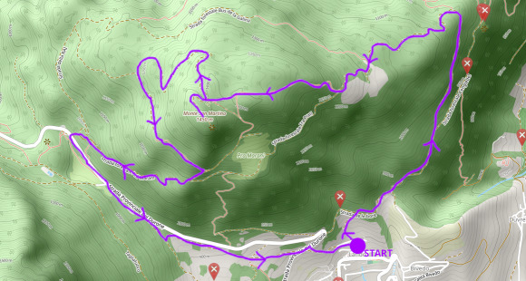
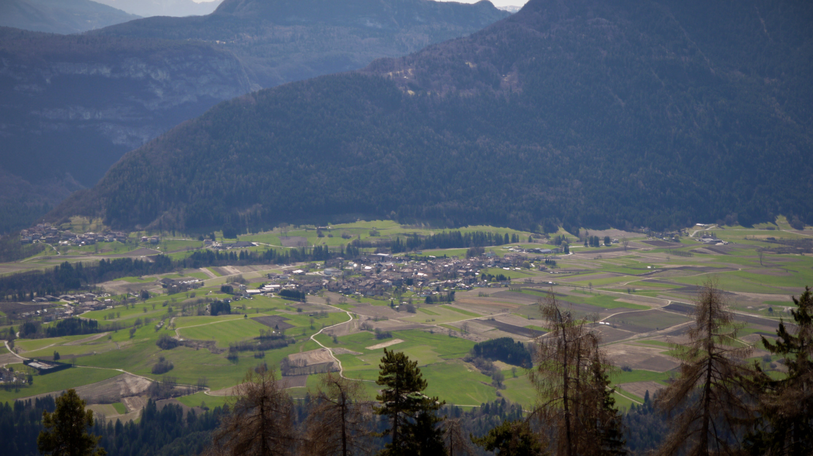
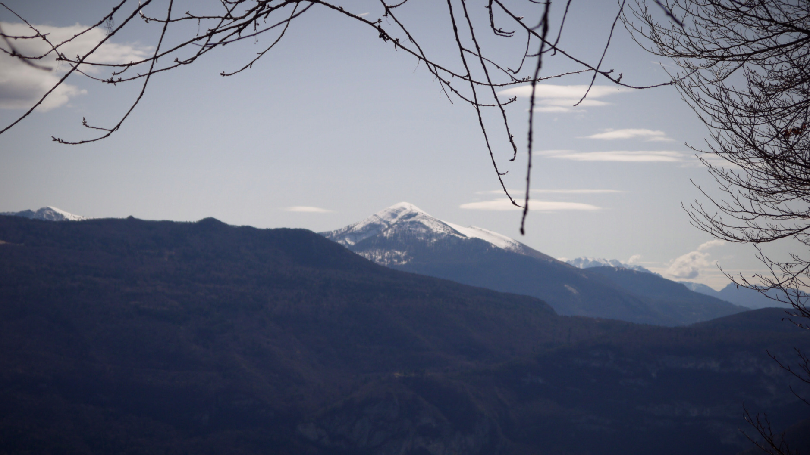
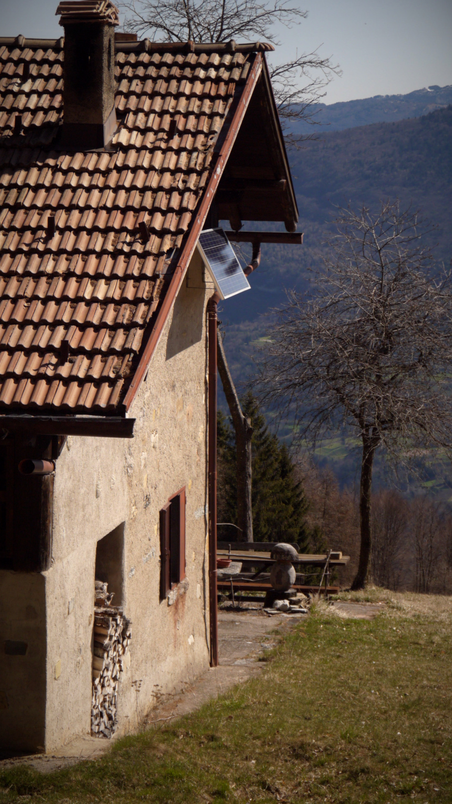
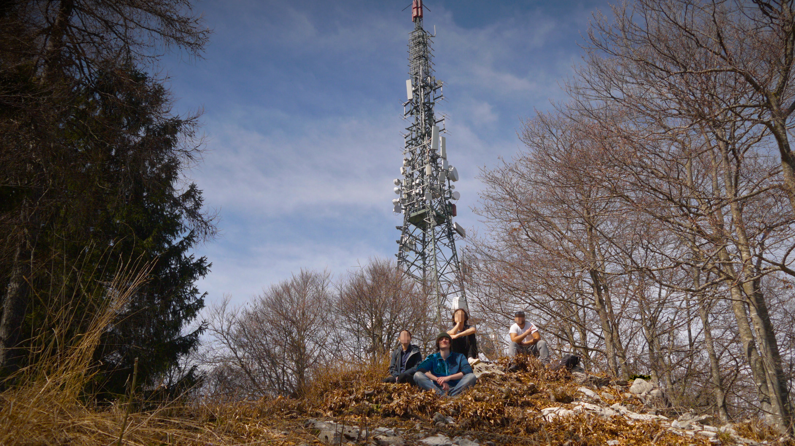
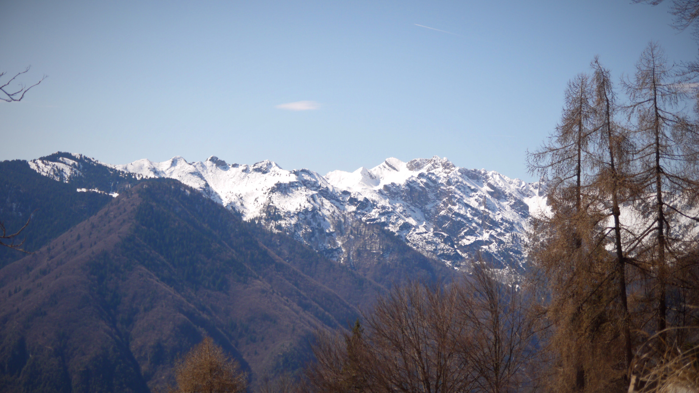
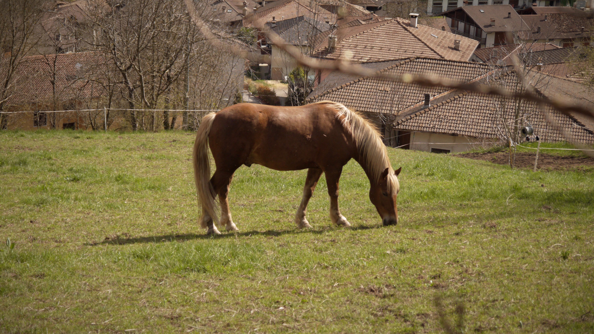

Giovanni's Diary > Subjects > Writing > Surroundings > Chapters >
Mount San Martino
Mount San Martino (~1400m) is located west of Bleggio Superiore and east from Val Rendena, in a beautiful place called Giudicarie. The whole area of Bleggio is a place rich with history and legends. Once upon a time, in the medieval age, merchants and popes would travel through those lands to go north, villages developed, churches were built. Even to this day, this place still holds the memory of a great and prosperous time. In modern times, due to industrialization, the valley of Adige began developing and became the main road to the north and an important industrial center. Still, this place gained something else, it is now a peaceful, wonderful place, respectful of nature and life itself.
We begin our hike on the location of Larido, south of Rango (as a sidenote, Rango is famous for Christmas shops) where there are places to park. The path forward is not certain at the start, since there are no signs mentioning the mountain top, so with a bit of trust we follow the only path west going upward.

Figure 1: Map of the hike
The hike is a safe one, the overall height difference is 670m but the rate of change in elevation is smooth across the whole hike, without any difficult sections. We choose this hike because there is still snow over 1500m so we planned to stay low (spoiler, we still found some snow in unilluminated areas). After some time, the view opens to the valley below, looking east. The tops of Bondone and Stivo are very recognizable, dominating over the other mountains.

Figure 2: View of the town of Fiave from the mountain

Figure 3: View of the mount Stivo
Midway to the top, a grass area opens up. A few tiny, little one-room houses are scattered here and there, one high up, one far down the edge. The view here is wonderful, the sun shines, no car noises can be heard. We spot a young couple enjoying their breakfast in the garden, we say hello to them and shared a smile, as everyone does with strangers.

Figure 4: A beautiful and peaceful house
All of a sudden we reach the top, where a radio tower replaces the usual cross we find in mountain tops. We stop for a break and to have launch and some laughs.

Figure 5: Group photo after reaching the top

Figure 6: South view
Descending here is easy, we take the well made forestale path, and then we switch to an abandoned one which is barely visible. It had a magical feel, as if we were in a forgotten forest with witches and monsters, with dead trees left and right to disorient us. We came out alive towards the strada provinciale before taking another path back to Larido, were everything started. Before that, we took some time to play with an horse.

Figure 7: Picture of a horse
Travel: Surroundings, Index